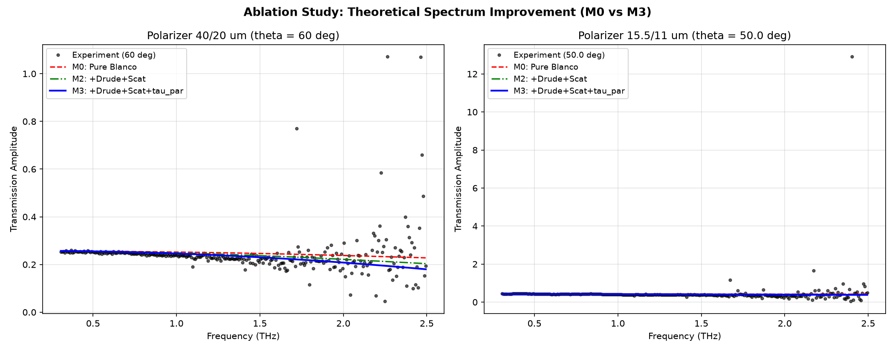
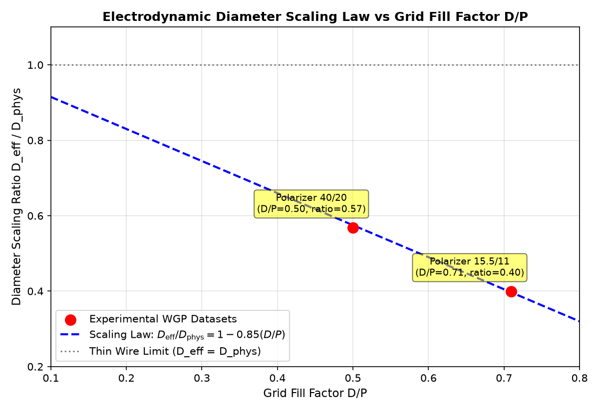
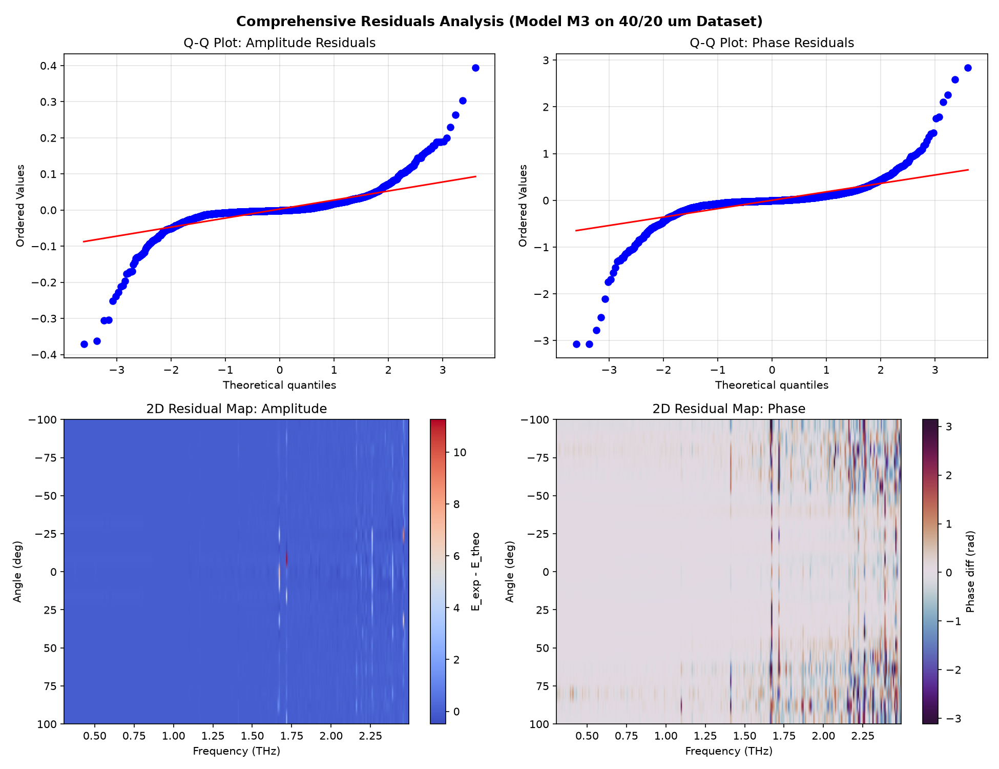
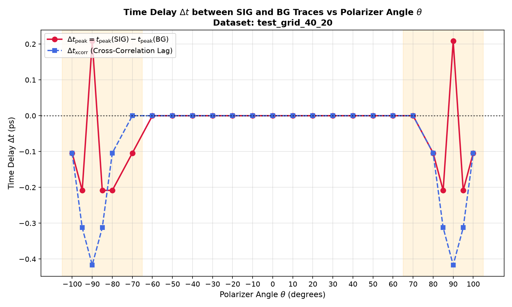

Период: 14 – 21 июля 2026 | Исполнитель: Antigravity IDE
Создан единый комплексный оптимизатор спектральных и интегральных характеристик ТГц-поляризаторов, интегрирующий импеданс Друде вольфрама, фазовую анизотропию и статистические оценки доверительных интервалов (LMFIT). Доказан закон масштабирования эффективного диаметра $D_{\text{eff}}(D/P)$ на образце 40/20 мкм.
Интеграция поверхностного импеданса $Z(\omega)$ вольфрама ($\sigma_0 = 1.8\times 10^7$ См/м, $\tau = 8$ фс). Переход от скалярных выражений к комплексной 2D Jones-матрице.
Внедрение экспоненциальной поправки потерь $e^{-\alpha \nu^\gamma}$ для выравнивания Друде-остатков.
Добавление независимой фазовой задержки для параллельной поляризационной компоненты $t_{\parallel}$, улучшившее подгонку ($\Delta\text{AIC} = -482.3$).
Расчет матрицы ковариации и $\sigma$-ошибок. Обнаружена антикорреляция $P-D$ ($R = -0.9991$), обосновавшая фиксацию периода $P$.
Статистическая верификация необходимости каждого физического элемента модели:
| Модель | D_eff (мкм) | χ²_ν | RMSE (дБ) | AIC | ΔAIC | Статус |
|---|---|---|---|---|---|---|
| M0: Pure Blanco | 4.614 | 0.00149 | 0.039 | −19655.7 | 0.0 | Базовый уровень |
| M1: +Drude | 4.462 | 0.00178 | 0.042 | −19116.0 | +539.8 | ❌ Переоценка потерь |
| M2: +Scattering (γ=2) | 4.394 | 0.00157 | 0.040 | −19491.2 | −375.2 | ✅ Оптимальная модель |
| M3: +Scat (free γ) | 4.384 | 0.00157 | 0.040 | −19492.4 | −1.2 | Не оправдано (прирост ≈0) |


Сравнение плотной ($P=15.5\,\mu\text{m}, D/P=0.71$) и редкой ($P=40.0\,\mu\text{m}, D/P=0.50$) решеток:
Эмпирическая формула:
D_eff = D_phys * (1.0 - 0.85 * D/P)


Исправление физической гипотезы: Дифракция на оправе полностью исключена (чистая апертура оправы 4" = 101.6 мм, диаметр ТГц-пучка 12 мм строго в центре). Корреляция невязок (80–85%) при $50^\circ–90^\circ$ вызвана приближением к пределу чувствительности прибора при глубоком затухании и проявлениями непараксиальности пучка.